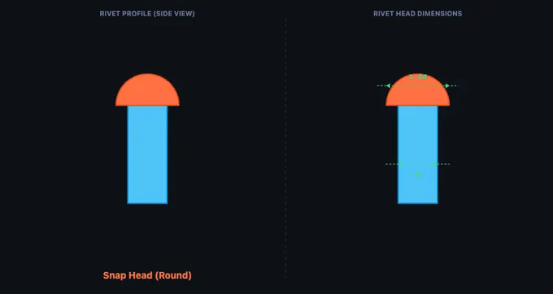
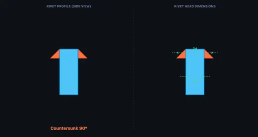
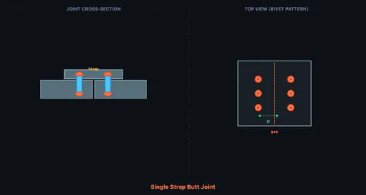

Types of Riveted Joints
Rivet types & riveted joints — Learn • Explore • Practice • Quiz
1 Overview
The Riveted Joints Trainer is an interactive visual learning tool covering 8 rivet head types and 7 riveted joint configurations. Riveted joints are permanent mechanical fastening connections used in structural steelwork, bridges, aircraft fuselages, boilers, and heritage structures. This trainer teaches you to identify rivet types (snap, pan, countersunk, mushroom, truss, flat, 60° countersunk, and tubular), understand joint configurations (single/double lap joints, single/double butt joints), and learn critical design parameters like rivet pitch, back pitch, and margin.
The trainer operates in four modes: Learn, Explore, Practice, and Quiz. Whether you are a fabrication apprentice identifying rivet types on the shop floor or an engineering student studying for an exam on joint design, this trainer provides the visual reference you need.
2 Setting Up the Job
The trainer opens in Explore mode showing the Rivet Types category. The canvas displays a detailed side-view profile of the selected rivet head with dimensions labelled. Below the canvas, a category toggle lets you switch between Rivet Types and Joint Types (with sub-categories for Lap Joints and Butt Joints).
Click any rivet or joint card in the item selector grid to see its profile on the canvas. The info card below shows the name, category, description, and common applications. Switch to Learn mode first if you want a guided introduction to rivet anatomy and nomenclature.
3 Learn Mode
Learn mode presents an annotated diagram of a rivet and riveted joint. The canvas shows a cross-section with labelled parts: head (pre-formed end), shank (cylindrical body), closing head (formed during installation), and the clamped plates. Below the canvas, clickable part buttons let you highlight each component on the diagram.
This is the recommended starting point for beginners. Click each part label to understand where it is located, then move on to Explore mode to study the full range of rivet and joint types. Understanding rivet anatomy is essential before you can identify types correctly in Practice and Quiz modes.
4 Speeds, Feeds & Theory
Explore mode is the main reference library. Toggle between Rivet Types (8 head profiles: snap/round, pan, 90° countersunk, 60° countersunk, mushroom, truss, flat, tubular) and Joint Types (lap joints: single-riveted, double-chain, double-zigzag; butt joints: single-strap single-row, single-strap double-row, double-strap single-row, double-strap double-row).
For each joint type, the canvas shows both a cross-section view (side view showing plates, rivets, and cover straps) and a top view (showing the rivet pattern with pitch and margin dimensions). The info card describes the joint’s characteristics, advantages, and typical applications. Single shear joints carry load across one shear plane; double shear joints (butt joints with two cover straps) carry load across two shear planes and are significantly stronger.
5 Try a Problem
Practice mode displays a random rivet or joint on the canvas and presents four answer options. Click the correct identification to earn a point. Click Next for a new challenge. Your running score is tracked so you can measure improvement over multiple sessions.
Quiz mode is a timed assessment with 5 questions. Each question shows a rivet or joint diagram and four answer choices. After completing all questions, a detailed result panel shows your score, star rating, and a review of each question with the correct answer highlighted. Click New Quiz to retry.
6 Shop Tips
- Snap head (round head) rivets are the most common structural rivets — look for the semi-spherical dome profile.
- Countersunk rivets sit flush with the plate surface and are used in aerodynamic applications (aircraft skins) where a smooth surface is required.
- In a lap joint, the plates overlap directly. In a butt joint, the plates are end-to-end with one or two cover straps bridging the gap.
- Double-strap butt joints are the strongest configuration because they provide double shear — two shear planes per rivet.
- Rivet pitch (centre-to-centre spacing) is critical: too small weakens the plate between holes; too large allows plates to buckle.
- Joint efficiency = strength of riveted joint / strength of solid plate. A well-designed joint achieves 70–85% efficiency.
- Study all 8 rivet types in Explore mode before attempting the Quiz — focus on distinguishing mushroom from pan heads, and 90° from 60° countersunk.
Understanding Riveted Joints — Free Interactive Trainer

Riveted joints are one of the oldest and most reliable methods of permanently fastening metal plates and structural members. Before welding became widespread, riveting was the primary joining method for bridges, ships, boilers, and buildings. Even today, riveted joints remain important in aircraft construction (where aluminium alloy rivets are preferred over welding), heritage structural repair, and applications where vibration resistance and fatigue performance are critical. This free online trainer covers the fundamentals of rivet types, joint configurations, and rivet nomenclature.
A short historical aside that students remember: the Titanic's hull plates were riveted, not welded, and forensic dives have shown that the iron rivets in the bow section failed in shear under cold-water impact loads. Modern aircraft still rivet for the same reason riveting beat welding in 1912 — predictable load paths in fatigue, and a closing head that you can inspect visually. Welds bury their failures inside the metal; rivets show them on the surface.

Types of Rivet Heads
A rivet consists of a cylindrical shank (body) and a pre-formed head. The head shape determines the rivet's application. The snap head (round head) is the most common structural rivet with a semi-spherical dome. Pan heads have a flat top with tapered sides. Countersunk heads (90° or 60°) sit flush inside a chamfered hole for aerodynamic or smooth surfaces. Mushroom and truss heads provide extra-wide bearing surfaces for thin sheet metal. During installation, the tail of the rivet is deformed to create a closing head, locking the plates together permanently.

Types of Riveted Joints
Riveted joints fall into two main categories: lap joints and butt joints. In a lap joint, the plates overlap and rivets pass through both layers. Lap joints can be single-riveted (one row), double-riveted (two rows in chain or zigzag pattern). In a butt joint, the plates are placed end-to-end with one or two cover plates (straps) bridging the gap. Butt joints are stronger and more symmetric, commonly used in boiler shells and pressure vessels. The rivet pitch (spacing), back pitch (row distance), and margin (edge distance) are critical design parameters that affect joint strength and efficiency.
How to Use This Trainer
Start in Learn mode to study the anatomy of a rivet and riveted joint with interactive part highlighting. Switch to Explore mode to browse all 8 rivet head types and 7 joint configurations — see side-view profiles with dimensions, and joint cross-sections alongside top-view rivet patterns. Practice mode presents random identification challenges with instant feedback and score tracking. Quiz mode tests your knowledge with 5 randomised questions and a scored result panel.
Who Uses This Trainer?
This riveted joints trainer is designed for mechanical engineering students, fabrication apprentices, aircraft maintenance trainees, structural engineering learners, and workshop instructors who need a quick, visual way to teach or revise rivet types and joint configurations without physical samples or textbooks.
Explore Related Simulators
If you found this Riveted Joints simulator helpful, take the design further with the Rivet Joint Designer to compute pitch, the three failure modes and joint efficiency, and explore our Bolted Joint simulator, Welding Symbols trainer, and Stress–Strain Curve simulator for more hands-on practice.